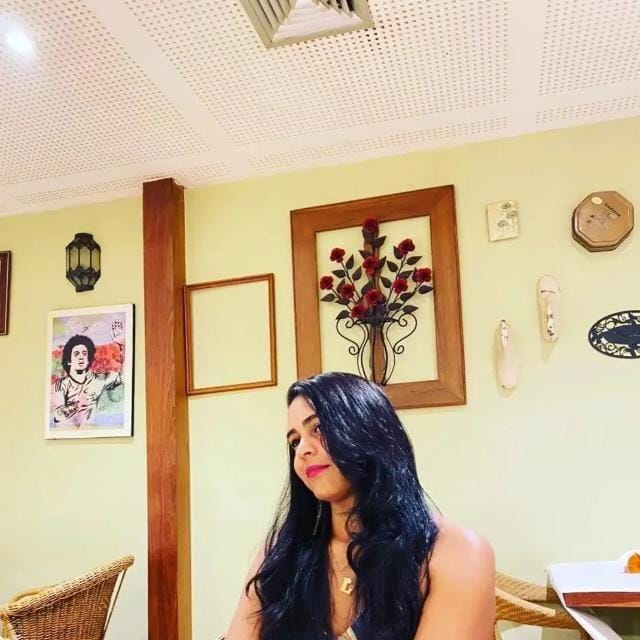

Olá, seja bem-vindo!
Eu sou
Larissa Thalia
Desenvolvedora Front-end | Cientista de Dados | Analista de Suporte
Sobre
Quem sou

Estou em um momento de transição de carreira para a área de desenvolvimento,
impulsionada pela paixão por tecnologia e pela vontade de acompanhar as inovações que transformam o mundo.
Meu foco é evoluir constantemente, buscando aprender novas habilidades e aplicar conhecimentos em projetos desafiadores.
Com uma abordagem proativa, estou sempre atenta às tendências emergentes e pronta para colaborar em soluções criativas
que impactem positivamente os negócios e a sociedade. Acredito no poder da tecnologia para transformar ideias em resultados
concretos e estou comprometida em ser parte dessa evolução.
Experiência Profissional
DXC Technology
Abril, 2021 - Atual
Analista de suporte N1
Suporte remoto através do atendimento via chat, atendimentos técnicos por acesso remoto, instalação, configuração e manutenção de software.
UNIFTC
Setembro de 2018 - Abril de 2021
Técnico em Suporte Jr
Atendimento aos clientes internos e externos(presencial e remoto) utilizando ferramentas de helpdesk.
UNIFTC
Janeiro de 2018 - Setembro de 2018
Técnico em Informática
Reparo e manutenção de computadores, instalações impressoras multifuncionais, atendimentos aos clientes internos e externos (presencial e remoto) utilizando ferramenta de helpdesk, instalação de equipamentos para videoconferência, instalação de ramal.
UNIFTC
Agosto de 2016 - Dezembro de 2017
Jovem Aprendiz
Reparo e manutenção de computadores, instalações impressoras multifuncionais, atendimentos aos clientes internos e externos (presencial e remoto) utilizando ferramenta de helpdesk, instalação de equipamentos para videoconferência, elaboração de planilhas, arquivamento de documentos, cadastramento de Mac de dispositivos administrativos e acadêmicos no DHCP através de PfSense.
Formação Acadêmica
Estácio
Julho, 2024
Pós-Graduação
Engenharia de Software
Proporcionou uma formação prática e teórica em desenvolvimento, gestão e manutenção de sistemas. O curso abordou metodologias ágeis, arquitetura de software, testes e gerenciamento de projetos, capacitando para a aplicação de boas práticas e a solução de problemas complexos em ambientes tecnológicos dinâmicos.
Universidade Católica do Salvador(UCSAL)
Dezembro, 2022
Graduação
Análise e Desenvolvimento de Sistemas
Forneceu uma base sólida em programação, análise de sistemas e desenvolvimento de software. O curso abrangeu linguagens de programação, banco de dados, engenharia de software, infraestrutura de TI e metodologias de desenvolvimento, capacitando para criar soluções tecnológicas eficientes e inovadoras. A formação também incluiu o desenvolvimento de habilidades analíticas e a aplicação de boas práticas para atender às necessidades do mercado de tecnologia.
Cursos
Udemy
Em andamento
Curso de Python + RPA + Criação de Projetos Reais
DIO
Julho, 2024
Python AI Backend Developer
Gama Academy
Julho de 2021 - Agosto de 2021
Desenvolvimento Full Stack
Udemy
Dezembro, 2020
Banco de Dados SQL e NoSQL do básico ao avançado
Certificações
Ka Solution
Fevereiro, 2024
Microsoft Certified: Azure Fundamentals
CertiProf
Fevereiro, 2025
Certificação Profissional de Trabalho Remoto - RWPC
DBAOCM
Setembro, 2021